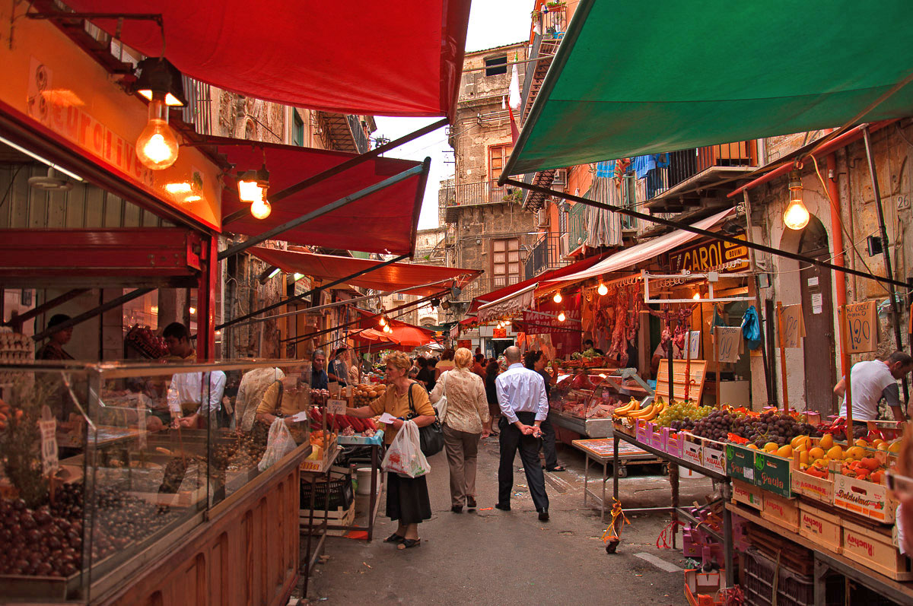
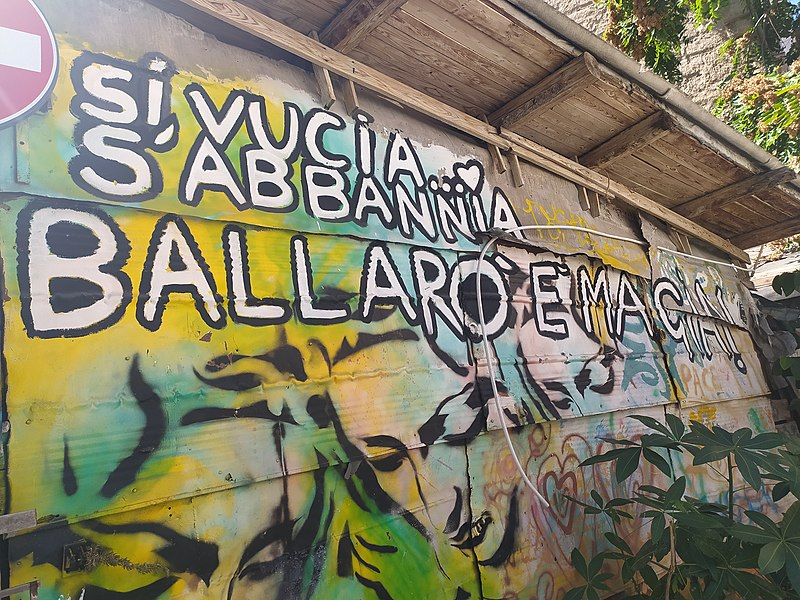
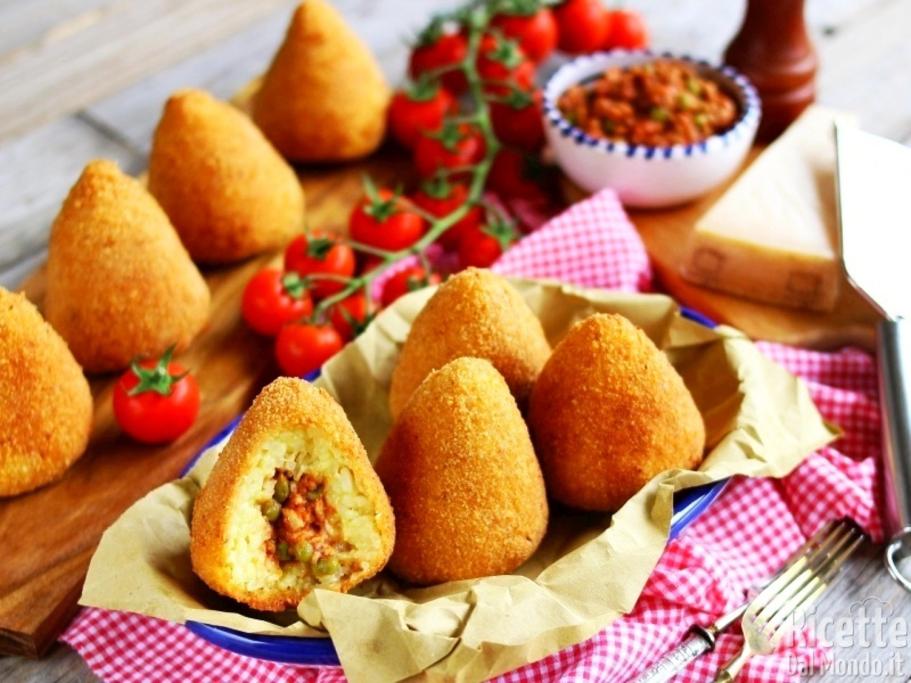

|
|
|

La storia del Mercato di Ballarò affonda le radici nell'epoca araba, quando Palermo era un importante centro di scambi commerciali nel Mediterraneo. Tuttavia, la sua struttura attuale risale principalmente al periodo normanno nel XII secolo, quando i sovrani normanni favorirono la costruzione di mercati e promossero il commercio nella città.
Il Mercato di Ballarò si estende lungo le vie strette e tortuose del quartiere Albergheria, dando vita a un labirinto vibrante di bancarelle, colori e suoni. Il nome Ballarò potrebbe derivare dall'arabo Balhara, che significa mercato o bazar, testimonianza dell'influenza storica e culturale della dominazione araba.
Questo mercato è rinomato per la sua vasta gamma di prodotti freschi e locali. Le bancarelle sono cariche di frutta e verdura fresca, pesce appena pescato, formaggi locali, spezie esotiche e specialità siciliane, come arancini e panelle. Gli aromi intensi e i colori accesi rendono il Mercato di Ballarò un'esperienza sensoriale unica, coinvolgendo i visitatori in un viaggio attraverso la ricca tradizione culinaria siciliana.
All'interno del mercato i fruttivendoli
vendono cibi cotti e cibi da strada,
tipici della cucina palermitana,
come cipolle bollite o al forno,
panelle (frittelle di farina di ceci),
crocchè o cazzilli (crocchette di patate),
verdure lesse, polpo,
quarume (interiora di vitello),
panino con la meusa (milza).


Oltre al cibo, il Mercato di Ballarò offre anche una vasta gamma di prodotti non
alimentari, tra cui abbigliamento, oggetti d'arte e artigianato locale.
La vivacità del mercato è amplificata dalla cordialità dei commercianti, che
contribuiscono a creare un'atmosfera calorosa e accogliente.
Nel corso degli anni, il Mercato di Ballarò ha resistito a cambiamenti politici,
sociali ed economici, mantenendo il suo ruolo centrale nella vita della comunità
palermitana.
Oggi, il mercato continua a prosperare come luogo di incontro e scambio,
preservando la sua autenticità e il suo fascino storico.
La visita al Mercato di Ballarò è un'opportunità unica per immergersi nella cultura
siciliana, assaporare i sapori locali e apprezzare la vivacità di uno dei mercati più
antichi e affascinanti di Palermo.